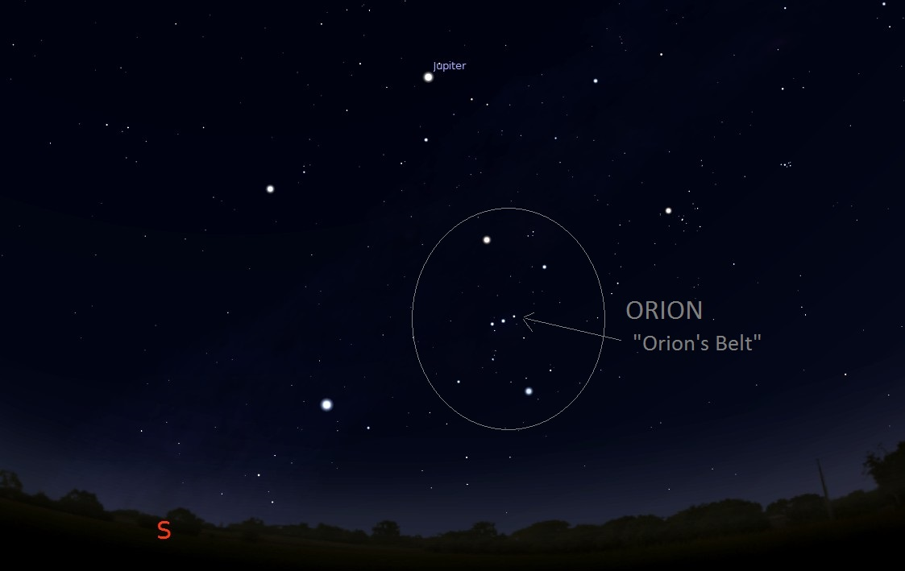
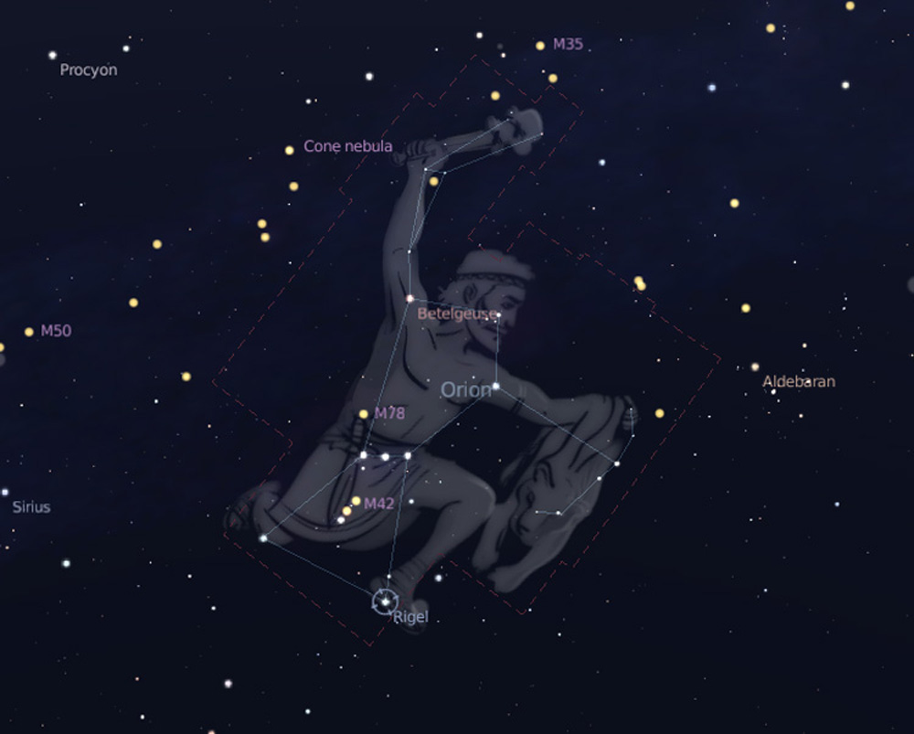

Orion
A knealing hunter with his sword at his side, the arrogant son of Poseidon.
How to Find It
Orion's Belt can be most easily distinguished by a line of three evenly spaced stars (Orion's "belt"), with an smaller line of three stars at an angle to these (Orion's "sword").
The direction of these stars will vary depending on the season, which is why it is crucial to learn to recognize the two lines of three in relation to each other.
The surrounding stars complete the constellation of Orion, four major ones which form a sort of diamond around Orion's Belt.